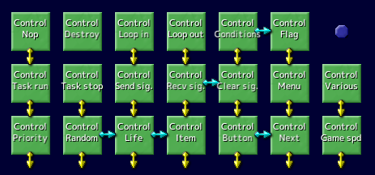
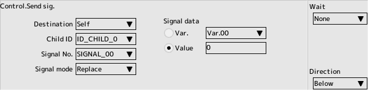

back to the original page
back to the original page

Script commands
Control Group
Nop
- It's a do-nothing control panel
- with a special feature called infinite weight
Destroy
- Annihilate your character
- No destruction task will be performed
Loop in
Used to repeat a series of control panels a certain number of times.
- Loop numbers
0-15, repeating with the same numbered end-of-loop panel
- Number of loops
Repeated times(value or variable)
Loop out
- Loop numbers
0-15, repeating with the same numbered loop start panel
Be careful how you number the loops when you do multiple loops
Conditions
- Compare
- PARAM_A,B
Value set in the stage setting's appearance table
- Split condition
Branch to the right when the comparison target and value satisfy the conditions
If not, we'll just go straight down.
Flag
- Attribute flag
- Select one of the flags set in the character edit
- Turn on
Switch the selected attribute flag on
- Turn off
Switch the selected attribute flag off
- Var.
Gets or sets the selected attribute flag to a variable
Specify direction and variables
Attribute flag "Joint" character cannot be changed
Task run
- Task number
0-15
Task without GATE will not be started
See Inherited Scripts, Default Scripts section
- Start from the beginning
When checking, it starts from GATE unconditionally
When unchecked, do nothing while the task is already running
When unchecked, if a task is paused, it will be restarted from there
Task stop
- Task number
0-15
Suspend the specified task
If you stop your own task, be sure to include one frame of weight

Send Signal
- Send to
- You
always valid
- Invalid if the parent
is not present
- Select the target child by Child
child ID, disabled if not present
- Artist(Child)
An optional character added to a node on the Articulation tab in the Character Edit window. . All joints are covered.
- Child ID
To be sent to a child
- Signal number
SIGNAL_00 to SIGNAL_15
- Send mode
Select to send as-is or to compute with the recipient
- Choose whether to send the contents of the data
or the value of the variable
Recv Signal
Compare with the received signal and conditional branching
- Wait until a signal is received
If you have never received a signal, continue to wait in this panel
- Signal number
SIGNAL_00 to SIGNAL_15
- Split condition
- Split to the right when the signal value and (value or variable) meet the conditions
-
If not, we'll just go straight down.
The flag whether a signal has been received at least once is reset in the "Clear Signal" panel

Clear Signal
Reset the flag whether a signal has been received at least once
Also, the received signal value is cleared to zero (selectable).
- Clear all signals
All signals from SIGNAL_00 to SIGNAL_15 are covered when checked
- Do not set the received data to 0
- No action on the received signal value when checking
- Signal number
SIGNAL_00 to SIGNAL_15
Menu
Simple player selection menu
How to make a simple menu
- System settings
Select Player Selection
- Select sound effects
Select sound effects during operation
- Enable cancel
Cancelable by pressed Cancel Button
- Selection by LR
Select up and down or left and right
Priority
- Display Priority
Select which layer on the stage edit/priority list to display on
- Z-value offset
Changes the z-value offset for character editing (value or variable)
Random
- Branch to the right with a specified probability
0-100%
Life
- Branch to the right if the remaining strength is below the specified percentage (including equals)
0-100%, rounded down to the nearest whole number
- Weighting indefinitely until the branching out
Exit to the bottom when unchecked
Item
Used to switch content by time when creating an item character
- Change item contents to:
Select the character for the item
Button
- Button
Selecting none always makes it false
- Wait until pressed
Exit to the bottom when unchecked
- Enable even when keeping button
If unchecked, it will be triggered
Next
- Register the next stage
Except for the main stage, the other stages will be ignored
If not specified, the next item in the main stage will be selected
- Transit Now
When unchecked, transition when the stage is cleared
Various
- Destruction
They will be in the same state as being destroyed with zero HP. Destroy task will also be activated
- Exit application
Disabled during test play
- Transition to title
Exit the current scene and Transition to title
- Transition to player select
Exit the current scene and Transition to player select
- Transition to opening
Exit the current scene and Transition to opening
- Transition to ending
Exit the current scene and Transition to ending
- Transition to ranking
Exit the current scene and Transition to ranking
- Transition to main stage
Exit the current scene and Transition to main stage
- Transition to auto demo
Exit the current scene and Transition to auto demo
- Ranking cursor down
Move cursor when ranking
- Ranking cursor up
Move cursor when ranking
- Ranking page next
Switch page when ranking
- Ranking page prev
Switch page when ranking
- Ranking type next
Switching the type of my ship when ranking
- Ranking type prev
Switching the type of my ship when ranking
- Ranking execute replay
Execute a replay of the cursor position
Regarding scene transition systems
Replay records will be destroyed
Ignored during replay playback and auto demo
Use the "Next" command if you want the replay to continue
Game Speed
It will return to default at the start of the stage.
Vibration
Controls pad vibration motors
- Motor0
Check if you want to change. Intensity(0-100)
- Motor1
Check if you want to change. Intensity(0-100)
- Fade Frame
Number of frames to reach setpoint
- Total Frame
Overall number of frames to vibrate
Caution
The intensity and nature of vibration varies from pad to pad
Back to the top of the page